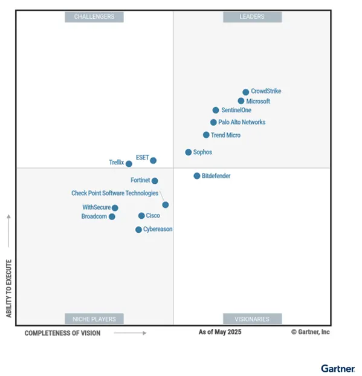

SentinelOne Singularity: A Deep Dive into Next-Gen Security
1. Executive Summary
The SentinelOne Singularity Platform represents a paradigm shift in cybersecurity, offering an autonomous, AI-driven solution tailored for today's rapidly evolving threat landscape. By consolidating multiple security layers—Endpoint Protection (EPP), Endpoint Detection and Response (EDR), Extended Detection and Response (XDR), and Identity Threat Detection and Response (ITDR)—into a unified platform, it delivers holistic protection without the operational overhead of disjointed tools.
Recognized as a "Leader" in the 2024 Gartner Magic Quadrant for the fourth consecutive year and achieving 100% detection efficacy in MITRE ATT&CK evaluations, SentinelOne is defining the standard for modern endpoint security. Its ability to function completely offline, coupled with automated incident response and patented rollback capabilities, empowers organizations to implement robust Zero Trust strategies with confidence.
2. Architecture: Single Agent, Multi-Engine
At the heart of the Singularity Platform lies its revolutionary "Single Agent — Multi Engine" architecture. Unlike legacy solutions that require multiple agents for different functions (e.g., one for AV, one for EDR, one for vulnerability management), SentinelOne delivers all capabilities through a single, lightweight agent.
This agent operates at the kernel level, monitoring file systems, processes, and memory activities in real-time. It leverages two distinct Artificial Intelligence engines working in tandem:
- Static AI Engine: This engine replaces traditional signatures. It analyzes the structure and code characteristics of files before they run (On-Write), preventing known and unknown malware without needing daily updates.
- Behavioral AI Engine: This engine monitors the system in real-time (On-Execute). It tracks process relationships, API calls, and network connections to detect anomalous behaviors indicative of advanced attacks like fileless malware, lateral movement, and zero-day exploits.
Crucially, this architecture enables Autonomous Decision Making. The agent does not rely on cloud connectivity to make a decision. Even if an endpoint is offline (e.g., an air-gapped system or a laptop on a plane), the AI models running locally on the device can detect and block threats instantly.

3. Threat Detection and Deep Visibility
SentinelOne’s detection strategy is comprehensive, covering the entire lifecycle of a file or process:
- Pre-Execution (On-Write): Files are analyzed immediately upon being written to disk. If the Static AI deems a file malicious, it is quarantined before it can execute.
- Execution (On-Execute): If a process starts, the Behavioral AI watches its actions. If a legitimate process (like PowerShell) starts behaving maliciously (e.g., attempting to dump credentials), the agent intervenes.
Storyline™ Technology
One of SentinelOne's most significant innovations is Storyline™ technology. In traditional EDRs, analysts are flooded with thousands of independent alerts that they must manually correlate. SentinelOne automates this by assigning a unique "Storyline ID" to every process and its related activities.
When an incident occurs, the platform presents the entire attack chain—from the initial phishing email to the final payload execution—as a single, visualized timeline. This context drastically reduces Mean Time to Investigate (MTTI).

4. Incident Response and Automation
Detection is only half the battle; response speed is critical. SentinelOne offers robust, automated response capabilities that can operate without human intervention:
- Kill & Quarantine: Automatically stops malicious processes and quarantines associated files.
- Network Isolation: Instantly disconnects a compromised device from the network to prevent lateral movement, while maintaining a secure tunnel to the management console for remediation.
- 1-Click Remediation: Reverses all changes made by the threat (e.g., deleting dropped files, removing registry keys).
- Rollback: The ultimate safety net. Using VSS (Volume Shadow Copy Service), the agent can restore files encrypted by ransomware to their pre-infection state. This renders ransomware attacks ineffective without the need to pay a ransom or restore from backups.
Advanced Hunting with S1QL
For threat hunters, the platform offers S1QL (SentinelOne Query Language). This intuitive language allows analysts to search through historical telemetry data (retained for 14 to 365 days) to find subtle indicators of compromise (IOCs).
/* Example: Find processes executing 'net user' commands */
SELECT Timestamp, DeviceName, ProcessName, CommandLine
FROM ProcessActivities
WHERE LOWER(CommandLine) LIKE '%net user%' AND Timestamp > NOW()-180d;5. Operational Excellence: Policies & Licensing
The platform is designed for flexibility, supporting diverse operational needs through granular Reference Policies:
- Detect-Only Mode: Ideal for initial deployment or highly sensitive servers, generating alerts without blocking processes.
- Protect Mode: The standard for most endpoints, actively blocking and remediating threats in real-time.
Licensing is structured to scale with organizational maturity:
- Singularity Core: Essential NGAV (Next-Gen Antivirus) capabilities.
- Singularity Control: Adds device control (USB/Bluetooth), firewall control, and vulnerability management.
- Singularity Complete: The flagship tier, including full EDR, Deep Visibility, and advanced hunting capabilities.
- Singularity Commercial/Enterprise: Adds Identity security, managed threat hunting (WatchTower), and unlimited data retention options.
6. Integrations and Future Vision
No security tool exists in a vacuum. The Singularity Marketplace offers over 70 one-click integrations with leading security, IT, and DevOps tools—including Splunk, ServiceNow, Okta, and Zscaler. This allows SentinelOne to act as the "connective tissue" of the SOC, automating workflows across the entire stack.
Security for AI vs. AI for Security
SentinelOne is not just using AI to secure endpoints ("AI for Security"); it is also pioneering "Security for AI." With the acquisition of PingSafe (CNAPP) and the introduction of Purple AI, the platform is evolving to protect the very infrastructure that powers modern AI applications. This forward-looking approach ensures that as organizations adopt Generative AI, their security posture remains resilient.
7. Conclusion
SentinelOne Singularity is more than just an endpoint protection platform; it is a comprehensive enterprise security ecosystem. By combining autonomous AI, deep visibility, and automated remediation, it addresses the core challenges of modern SOCs: alert fatigue, skill shortages, and the increasing speed of attacks.
For organizations seeking to modernize their defenses, SentinelOne offers a compelling path: a single agent that handles prevention, detection, response, and hunting, all backed by the most advanced AI in the industry.
Recommendation
Organizations should consider a Proof of Concept (PoC) to test the "Rollback" feature in a controlled environment. Seeing a ransomware infection reversed in seconds is often the deciding factor for security teams.
Compliance Note: SentinelOne supports compliance with major standards including GDPR, HIPAA, PCI-DSS, and SOC2 Type II. Data is encrypted both in transit (TLS 1.2+) and at rest (AES-256).